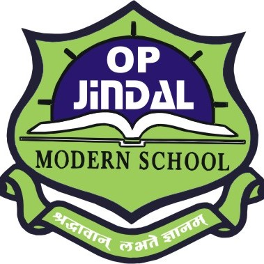
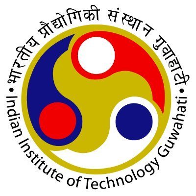

Hi there! I am Samiksha.
I am an undergrad at the Indian Institute of Technology Guwahati and will be graduating in 2022 with a Bachelor in Technology in Mathematics and Computing.
I've always had a flair and fascination for mathematics and a keen interest in computer science. With a little toss of luck, I landed here in this field. Finding solutions to challenging problems, emerging with innovative ideas, combining the mathematical logic and its application in computer science is what I have a knack for.
Beyond academics, I keep trying my hand at new and exciting things. I have a taste for anchoring, acting, hairstyling, sketching and making memes. Haha, you are going through my portfolio. "I see this as an absolute win!". Not to mention, I love interacting with people, making new friends, and it makes me really glad when I'm of service to others.
Want to know me better? Want to collaborate for a project? Hit me up! You can find me on LinkedIn, Instagram and Facebook. Are you an email kind of person? Well, here you go, samikshasimi26@gmail.com. Looking forward to hearing from you!
On the Flipside
I'm always up to something! I keep trying my hand at something new, exciting and challenging!


My Journey
The chronological set of events that made me who I am.
-

2006-2018
OP Jindal Modern School
This is where I spent a significant part of my life. A place that not just gave education and interpersonal skills, but lots of fun and lifelong memories!
-

July 2018
A fresher at IIT Guwahati
JEE turned out to be a great success and with a little toss of luck, I landed in Mathematics and Computing at IIT Guwahati. A jolly little kid starts off her college life!
-
October 2018
Organizer, Technothlon
Technothlon is an International school championship conducted solely by the student fraternity of IIT Guwahati. Making the question paper, organizing the test nationwide, and designing events for the top 50 teams takes in many sleepless nights, tons of hard work but gives out countless memories with the team and lots of fun!
-
April 2019
Welfare Secretary, Dhansiri Hostel
The happiest people I know are those who lose themselves in the service of others, and so did I! I love being around with people, talking, and making them happy. Those smiles are what I work for. It's in giving that we receive!
-
July 2019
Branch Representative, Dept. of Mathematics
Being the Branch Representative of my batch, not just bridged the gap between the professors and students but also enhanced senior-junior interaction, mentored juniors, and organized various activities like freshers' party and intern talks.
-
October 2019
Web Developer, Students' Web Committee
My interest in web development brought me here. Working on real-life projects within teams, refined not only the technical skills but also polished my interpersonal skills. It was a cherry on the cake!
-
Be Part
Of My
Story!